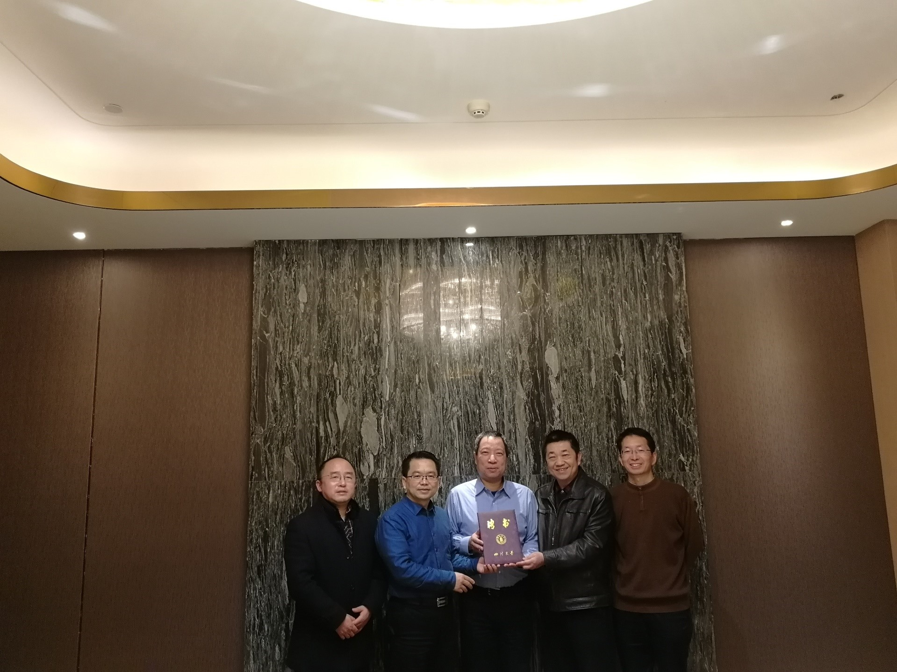

12月19日上午，挪威Chunming Rong院士受聘为四川大学“名誉教授”聘书颁发仪式在望江校区举行， 科研院院长褚良银、计算机学院（软件学院）党委书记蒋斌、科研院副院长邹勇以及工业互联网研究院负责人参加了仪式。
为使四川大学工业互联网研究院顺利开展工作，将区块链技术和工业互联网相结合，在智能制造中取得更好地突破， 四川大学特聘挪威Chunming Rong院士为“名誉教授”，聘书由科研院院长褚良银和计算机学院（软件学院）党委书记蒋斌共同颁发。Chunming Rong院士表示将会结合自己的研究工作全力配合工业互联网研究院的工作，并为研究院的发展提供建设性的意见。
Chunming Rong院士，IEEE Blockchain联合主席、IEEE CloudComputing主席，斯塔万格大学（the University of Stavanger，UiS）知识产权服务创新中心（the Center for IP-based Service Innovation ，CIPSI）的负责人， 是IRIS主导大数据发展的兼职首席科学家。2015-2016任CSA挪威分会副主席。2011年起为挪威科技科学院（the Norwegian Academy of Technological Sciences ，NTVA）的成员。 是IEEE CloudCom会议和研讨会系列的创始人和指导主席，也是IEEE CloudComputing协会（TCC）的指导主席和副主编，以及Springer“云计算杂志”的联合主编。Chunming Rong院士的研究方向为：数据科学、云计算、安全和隐私。
（供稿人：郭敏）